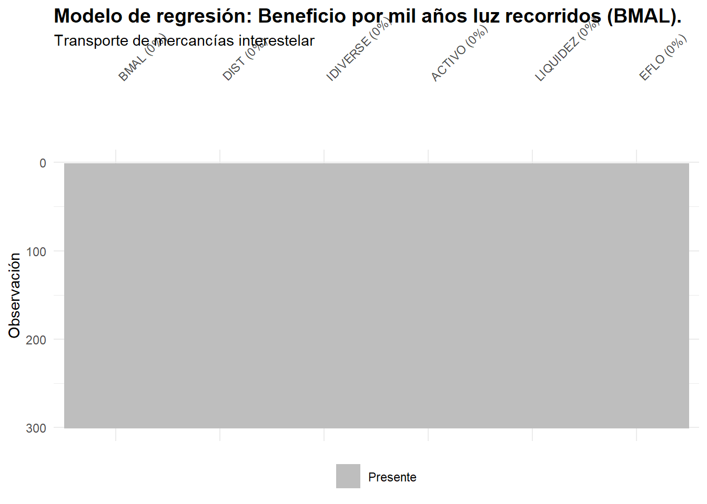
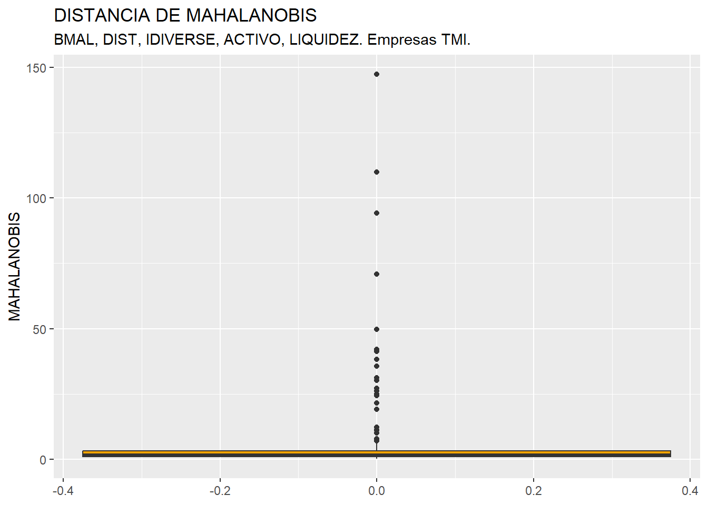
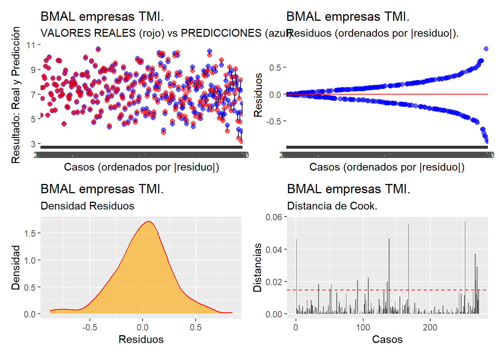
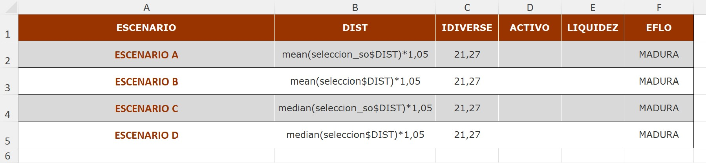
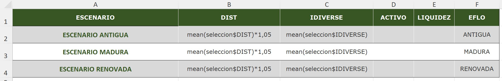

9 Análisis de Regresión Lineal Múltiple.

9.1  Introducción.
Introducción.
El análisis de regresión (lineal) múltiple es una de las técnicas de análisis de dependencias más profusamente utilizadas. En el modelo de regresión múltiple la variable dependiente tiene escala métrica. Las variables explicativas pueden ser métricas o ser atributos (factores).
Según los datos de los que se alimenta el modelo, se aplicarán diferentes métodos de estimación, especificaciones y pruebas:
Series temporales.
Datos de corte transversal.
Paneles de datos.
En este capítulo nos centraremos en los modelos estimados con base en datos de corte transversal (es decir, las variables tienen datos referentes a distintos casos o individuos: personas, empresas, países, etc.)
La construcción de un modelo de regresión cuenta con una serie de etapas, que son:
Especificación del modelo: establecer las variables que entrarán a formar parte del modelo (dependiente, explicativas).
Estimación: calcular el valor de los parámetros o coeficientes estructurales del modelo.
Contraste y validación: verificar si el modelo estimado cumple con las hipótesis que garantizan unas buenas propiedades y si es adecuado para representar la realidad.
Utilización del modelo: a efectos de previsión, análisis estructural o simulación de escenarios.
Vamos a partir del modelo básico de regresión (MBR). Es cierto que, para superar ciertas carencias de este, en la literatura se ha procedido a desarrollar especificaciones y métodos de estimación más elaborados; pero no es menos cierto que no es conveniente “quemar” etapas sin conocer las características del modelo fundamental, como cimiento donde se posan modelados más complejos.
En el MBR vamos a suponer que existen:
Una variable dependiente y.
k variables explicativas \(x_j\).
Variable o perturbación aleatoria u, que recoge el efecto conjunto de todas aquellas variables que afectan al comportamiento de y pero que no están explicitadas en la especificación como variables x.
El tamaño de la muestra es n.
El modelo que se plantea es:
\[ y_i=\beta_1x_{i1}+\beta_2x_{i2}+\cdots+\beta_kx_{ik}+u_i \]
con \(i=1,2,...,n\) .
O, en notación matricial:
\[ y=X\beta+u \]
Donde y es un vector (nx1), X una matriz (nxk), \(\beta\) un vector (kx1), y u un vestor (nx1).
En el MBR, la perturbación aleatoria u debe cumplir con una serie de hipótesis básicas: normalidad en su comportamiento, esperanza nula, homoscedasticidad o varianza constante, y ausencia de autocorrelación (covarianza nula entre diferentes elementos del vector de la perturbación). Estas hipótesis, junto a las de permanencia estructural (valores de los elementos de \(\beta\) constantes a lo largo de la muestra), no endogeneidad o regresores no-estocásticos (covarianza nula entre la matriz X y el vector u), y rango pleno (las columnas de la matriz X o variables explicativas no han de ser combinaciones lineales unas de otras); permiten que el MBR pueda ser estimado por el método de mínimos cuadrados ordinarios (MCO), obteniendo estimadores con las mejores propiedades: insesgadez, eficiencia, consistencia.
En la medida en que alguna o algunas de las hipótesis básicas no se cumplan, la calidad de los estimadores MCO perderan calidad, en el sentido de no gozar de las propiedades deseables, desde un punto de vista inferencial. En tal caso, podrán aplicarse otros métodos de estimación, diversos métodos econométricos, o asumir que los estimadores carecen de algunas de las propiedades deseables.
El modelo estimado será:
\[ \hat{y}_i=\hat{\beta}_1x_{i1}+\hat{\beta}_2x_{i2}+\cdots+\hat{\beta}_kx_{ik} \]
Y el error o residuo será, para cada observación, \(\hat{u}_i=y_i-\hat{y}_i\). El vector de residuos se considera una estimación del vector de perturbaciones aleatorias. Es por ello que el vector de residuos se utiliza para verificar el cumplimiento de las hipótesis del modelo básico referentes al comportamiento de la perturbación (normalidad, homoscedasticidad, ausencia de autocorrelación…)
Tras estas breves notas formales del MBR, pasaremos a construir un modelo que intentará explicar el comportamiento de la rentabilidad económica de un grupo de empresas en función de una serie de variables aleatorias.
9.2 Especificación del MBR. Datos de corte transversal.
9.2.1  Renovarse o morir.
Renovarse o morir.
Dixilaliza es una empresa especializada en ofrecer soluciones de alta tecnología a las empresas del sector del transporte espacial. En los últimos años, ha desarrollado una serie de herramientas basadas en la Inteligencia Artificial de tercera generación para optimizar la gestión de las grandes travesías interestelares: determinación de rutas, puntos de regarga de especia, balances energéticos, etc.
En este contexto, Dixitaliza ha encargado un estudio a la consultora Data-Evidence sobre la conveniencia de que las empresas de transporte interestelar de mercancías renueven sus flotas adoptando su soluciones tecnológicas, a fin de maximizar el rendimiento económico.

EL equipo de Data-Evidence, aprovechando los datos publicados por la Agencia Interplanetaria de Transporte de Mercancías, se ha decantado por estimar un modelo econométrico como soporte al planteamiento de diversos escenarios con diferentes grados de renovación tecnológica de su flota, en el que se pueda evaluar, en una empresa media del sector, el impacto que, sobre su rendimiento económico, tiene tal inversión.
9.2.2 Planteamiento inicial del modelo.
En coherencia con el objetivo del modelo, variable dependiente del modelo es el Beneficio Medio por cada 1.000 años luz recorridos (BMAL). Esta variable puede ser considerada como un indicador especialmente adecuado para medir el rendimiento económico operativo de las empresas de transporte interestelar de mercancías. Su utilización como variable dependiente en el modelo de regresión múltiple está sólidamente justificada tanto desde un punto de vista conceptual como empírico, por varias razones:
BMAL ajusta el beneficio a la escala física de la actividad: En el transporte interestelar, la actividad económica está inevitablemente ligada a una magnitud física fundamental: la distancia recorrida a lo largo de las rutas comerciales entre sistemas estelares. Empresas más grandes cubren mayores distancias totales y, por tanto, pueden tener beneficios absolutos más altos simplemente por escala. Esto hace que medidas como los ingresos totales, el beneficio neto o el margen bruto, puedan generar comparaciones engañosas entre empresas grandes y pequeñas. BMAL corrige esta distorsión, al expresar cuánto beneficio se obtiene por unidad de actividad física realizada, lo que facilita la comparación de empresas que operan rutas muy diferentes en extensión o en número.
BMAL capta eficiencia operativa, no solo escala: Mientras que medidas tradicionales (beneficio total, rentabilidad financiera, ROE, ROA, etc.) mezclan conceptos como el tamaño del balance, la estructura de capital, los efectos de apalancamiento y la eficiencia operativa; el indicador BMAL es primariamente operativo. Realmente captura la eficiencia del uso de la flota, la eficacia en planificación de rutas, la capacidad de generar beneficios ajustados a la distancia producida, la eficiencia energética y de mantenimiento de las naves y la calidad tecnológica de la flota. En sectores como el transporte interplanetario o interestelar, donde el “kilómetro recorrido” no tiene un precio lineal (por la variabilidad del espacio-tiempo, túneles de salto, costos de energía, riesgos de tormentas gravitacionales, etc.), una métrica como BMAL es muy informativa.
En el modelo se utiliza su transformación logarítmica natural (ln(RES)) con el fin de:
Estabilizar la varianza (reducir heterocedasticidad).
Aproximar la distribución a la normalidad.
Interpretar los coeficientes de las variables explicativas como elasticidades.
Es necesario tener en cuenta que, previamente, es necesario comprobar que no existen en la muestra casos con resultado económico nulo o negativo (pérdidas), ya que, entonces, no podría aplicarse la transformación logarítmica. Afortunadamente, en este caso, todas las empresas tienen un resultado positivo. En caso de no darse esta circunstancia, sería necesario especificar las variables sin logaritmos neperianos, o tomar alguna otra alternativa.
Como variables explicativas, se consideran las siguientes:
Estado de la flota (EFLO): Es la variable sobre la que se centra el estudio. La variable EFLO es categórica y clasifica a las empresas según el grado de modernización de su flota (“Renovada”, “Madura”, “Antigua”). Su inclusión en el modelo responde a la hipótesis de que el estado tecnológico de la flota es un factor determinante de la eficiencia operativa, ya que condiciona el consumo energético, el coste de mantenimiento, la frecuencia de averías y la fiabilidad de los motores de curvatura o de salto. Una flota madura o renovada suele incorporar mejoras tecnológicas que reducen el coste por parsec recorrido y aumentan la capacidad de generar beneficios ajustados a distancia. EFLO sintetiza este componente tecnológico y organizativo, permitiendo evaluar su impacto sobre el rendimiento operativo. Es razonable esperar que flotas más modernas se asocien a mayores niveles de BMAL, una relación que el modelo puede confirmar empíricamente.
Distancia total anual recorrida (DIST): La distancia recorrida es un determinante esencial del rendimiento operativo en el transporte interestelar, pues condiciona tanto la carga de trabajo como la estructura de costes asociada a la actividad. Rutas más extensas requieren un mayor consumo energético, incrementan la probabilidad de incidencias técnicas y elevan los costes de mantenimiento y desgaste de la flota. Por ello, aunque las empresas que recorren más distancia pueden generar mayores ingresos, ese incremento no siempre se traduce proporcionalmente en eficiencia económica. Incluir la distancia en el modelo permite capturar cómo el aumento de actividad física influye en la productividad ajustada por unidad de recorrido, reflejada en BMAL.
Índice de diversificación de servicios (IDIVERSE): La diversificación estratégica reduce la exposición a riesgos derivados de la volatilidad de la demanda intersistémica o de fallos operativos en rutas concretas. Empresas con mayor diversificación tienden a estabilizar su flujo de ingresos, aprovechar mejor su flota y distribuir costes fijos entre distintas actividades, lo que puede elevar su eficiencia global. No obstante, la diversificación también puede generar sobrecostes organizativos o ineficiencias si no está bien gestionada. Incluir IDIVERSE permite valorar si la diversificación contribuye realmente al rendimiento operativo por distancia recorrida o si, por el contrario, introduce complejidades que reducen BMAL.
Volumen de los activos totales (ACTIVO): El activo total refleja la escala y capacidad productiva de la empresa: mayor número de naves, infraestructura logística más desarrollada, tecnología de salto más avanzada o bases operativas mejor equipadas. Un incremento del activo puede asociarse a economías de escala, mayor eficiencia energética y capacidad para optimizar rutas, todo lo cual puede traducirse en un mayor rendimiento por unidad de distancia recorrida. No obstante, un aumento excesivo del activo también puede generar costes fijos sobredimensionados. Su inclusión permite medir hasta qué punto la escala de la empresa contribuye de forma eficiente al rendimiento operativo.
Ratio de liquidez (LIQUIDEZ): La liquidez captura la capacidad de la empresa para hacer frente a sus obligaciones operativas de corto plazo, algo especialmente relevante en un sector con elevados costes energéticos y de mantenimiento. Empresas con liquidez insuficiente pueden enfrentarse a restricciones financieras que limiten sus operaciones, reduzcan su margen de maniobra para gestionar imprevistos o les impidan acometer inversiones rápidas en reparación y optimización de la flota. Por el contrario, niveles moderados y saludables de liquidez facilitan la continuidad operativa y la eficiencia en la gestión de rutas. Incluir este ratio permite analizar si la solvencia de corto plazo influye en la productividad ajustada.
Por tanto, el modelo teórico adoptado se especifica como:
\[ \ln(BMAL_i) = \beta_0 + \beta_1 \ln(DIST_i) + \beta_2 \ln(IDIVERSE_i) + \beta_3 \ln(ACTIVO_i) + \beta_4 \ln(LIQUIDEZ_i) + \sum_{j=1}^{J-1} \gamma_j \, EFLO_{ij} + u_i \]
donde:
- \(\ln(BMAL_i)\) es el logaritmo natural del beneficio medio por cada 1.000 años luz recorridos de la empresa \(i\), utilizado como indicador de rendimiento operativo ajustado a la distancia recorrida;
- \(\ln(DIST_i)\) representa el logaritmo de la distancia total anual recorrida por la empresa \(i\), que aproxima el volumen físico de actividad intersistémica;
- \(\ln(IDIVERSE_i)\) recoge el nivel de diversificación de servicios de la empresa \(i\), expresado en términos logarítmicos para capturar su relación proporcional con el rendimiento;
- \(\ln(ACTIVO_i)\) expresa, también en forma logarítmica, la escala económica de la empresa a través del valor de sus activos totales;
- \(\ln(LIQUIDEZ_i)\) mide la posición financiera de corto plazo de la empresa \(i\), utilizando un ratio de liquidez transformado mediante logaritmos para facilitar su interpretación en términos de elasticidades;
- \(EFLO_{ij}\) es un conjunto de variables dicotómicas que capturan el estado tecnológico de la flota, tomando como base una categoría omitida;
- \(u_i\) es la perturbación aleatoria del modelo.
9.2.3 Preparación de los datos.
Vamos a trabajar en un proyecto de nombre, por ejemplo, “regresion”. En la carpeta de este proyecto hemos de guardar estos dos elementos:
archivo de Microsoft® Excel® “interestelar_300.xlsx”. Si abrimos este último archivo, comprobaremos que se compone de tres hojas. La primera muestra un mensaje sobre el uso de los datos, la segunda recoge la descripción de las variables consideradas, y la tercera (hoja “Datos”) almacena los datos que debemos importar. Estos datos se corresponden con diferentes variables económicas y financieras de 300 empresas dedicadas a los servicios de transporte interestelar de mercancías.
El script con el código que vamos a ir ejecutando se llama “regresion_rstars.R”.
Una vez abierto el script en el editor de RStudio , comprobaremos que la primera parte del código está dedicada a la limpieza de la memoria (Environment). Además, se cargan los paquetes que harán falta para ejecutar el código:
### REGRESIÓN MÚLTIPLE. Empresas TMI. ###
# Limpiando el Global Environment
rm(list = ls())
# Cargando paquetes
library (readxl)
library (dplyr)
library (ggplot2)
library (gtExtras)
library (visdat)
library (knitr)
library (kableExtra)
library (patchwork)
library (broom)
library (car) # para obtener el vif
library (lmtest)A continuación, se han integrado distintas funciones que serán operativamente útiles a la hora de obtener resultados. Estas funciones son:
-
Función
create_patchwork(): obtiene, a partir de una lista de gráficos elaborados con ggplot2, sucesivas composiciones de 4 gráficos (o menos, si es necesario), que devuelve a otra lista:
##### Función para crear composiciones de gráficos con patchwork ###############
create_patchwork <- function(plot_list) {
n <- length(plot_list)
if (n == 0) return(NULL)
full_rows <- n %/% 4
remaining <- n %% 4
patchworks <- list()
if (full_rows > 0) {
for (i in seq(1, full_rows * 4, by = 4)) {
patchworks <- c(patchworks, list((plot_list[[i]] + plot_list[[i+1]]) /
(plot_list[[i+2]] + plot_list[[i+3]])))
}
}
if (remaining > 0) {
last_plots <- plot_list[(full_rows * 4 + 1):n]
empty_plots <- lapply(1:(4 - remaining), function(x) ggplot() + theme_void())
last_patchwork <- do.call(patchwork::wrap_plots, c(last_plots, empty_plots))
patchworks <- c(patchworks, list(last_patchwork))
}
return(patchworks)
}
################################################################################-
Función
presenta_modelo(): función que convierte el objeto “lista” con la solución del modelo de regresión en una presentación de los resultados detallada, compuesta de tres tablas que son almacenadas en una nueva list. Un elemento fundamental para realizar este cometido es el empleo de la funcióntidy()del paquete broom, que sirve para convertir los resultados de modelos estadísticos u objetos analíticos en un data frame organizado (tidy data), con columnas estandarizadas como estimaciones, errores estándar, estadísticos y p-values. Además, la funciónglance(), también del paquete broom, extrae las siguientes informaciones:
r.squared: El coeficiente de determinación R², que indica el porcentaje de variación explicada por el modelo.
adj.r.squared: El R² ajustado, que toma en cuenta los grados de libertad.
sigma: El error estándar de los residuos.
statistic: El estadístico F del modelo.
p.value: El valor p asociado con el estadístico F, que indica la significancia global del modelo.
df: Los grados de libertad del numerador del estadístico F.
logLik: El logaritmo de la verosimilitud del modelo.
AIC: El criterio de información de Akaike.
BIC: El criterio de información bayesiano.
deviance: La desviación del modelo.
##### Definir la función de presentación de resultados: presenta_modelo() #####
presenta_modelo <- function(modelo) {
# Lista de piezas
modelo_piezas <-list()
# Aplicar la función tidy() al modelo
resultados <- tidy(modelo)
# Seleccionar las columnas deseadas
resultados <- resultados[, c("term",
"estimate",
"std.error","statistic",
"p.value")]
# Añadir la columna 'stars' según los valores de 'p.value'
resultados$stars <- cut(resultados$p.value,
breaks = c(-Inf, 0.001, 0.01, 0.05, 0.1, Inf),
labels = c("***", "**", "*", "·", " "),
right = FALSE)
# formatear los valores de la columna "estimate" a 5 decimales
resultados$estimate <- formatC(resultados$estimate,
format = "f",
digits = 5)
# Crear la tabla con kable
tabla1 <- resultados %>%
kable(format = knitr.table.format,
caption = "Modelo Lineal",
col.names = c("Variable", "Coeficiente", "Desv. Típica",
"Estadístico t", "p-valor", "Sig."),
digits = 3,
align = c("l", "c", "c", "c", "c", "c")) %>%
kable_styling(full_width = F,
bootstrap_options = "striped",
"bordered",
"condensed",
position = "center",
font_size = 11)
modelo_piezas[[1]] <- tabla1
# Aplicar la función glance
estadisticos <- glance(modelo)
estadisticos <- estadisticos[,c("r.squared",
"adj.r.squared",
"sigma",
"statistic",
"p.value",
"AIC",
"nobs")]
# Crear la tabla con kable
tabla2 <- estadisticos %>%
kable(format = knitr.table.format,
caption = "Estadísticos del modelo",
col.names = c("R2", "R2 ajustado", "Sigma", "Estadístico F",
"p-valor", "AIC", "num. observaciones"),
digits = 3,
align = "c") %>%
kable_styling(full_width = F,
bootstrap_options = "striped",
"bordered",
"condensed",
position = "center",
font_size = 11)
modelo_piezas[[2]] <- tabla2
# Obtener VIF
vif_df <- as.data.frame(vif(modelo))
# Añadir nombres de filas
library(tibble)
vif_df <- vif_df %>%
rownames_to_column(var = "Variable")
# Crear tabla con kable
tabla3 <- vif_df[,1:2] %>%
kable(format = knitr.table.format,
caption = "Factor de inflación de la varianza",
col.names = c("Variable","Valor VIF"),
digits = 3,
align = "c") %>%
kable_styling(full_width = F,
bootstrap_options = "striped",
"bordered",
"condensed",
position = "center",
font_size = 11)
modelo_piezas[[3]] <- tabla3
return(modelo_piezas)
}
############################################################################-
Función
predict_from_excel_scenarios(): Función que facilita la lectura de escenarios de simulación / previsión detallados en un archivo de Microsoft® Excel®, incluyendo para las variables explicativas tanto valores como fórmulas de cálculo de R (devuelve tabla con resultados):
############################################################################
#### Predicción por escenarios (valores o fórmulas con df$var) ############
#### ========================================================= ############
#### Requisitos: readxl, dplyr, stringr, purrr ############
#### (kableExtra es opcional, solo se quiere tabla formateada) ############
############################################################################
predict_from_excel_scenarios <- function(model,
train_df,
excel_path,
sheet = "Escenarios",
id_col = "ESCENARIO",
eval_dfs = list(train = NULL),
interval = c("prediction","confidence"),
level = 0.95,
transforma_log = FALSE,
return_kable = TRUE,
kable_caption = "Predicciones por escenario",
kable_digits = 3) {
if (!requireNamespace("readxl", quietly = TRUE)) stop("Falta 'readxl'")
if (!requireNamespace("dplyr", quietly = TRUE)) stop("Falta 'dplyr'")
if (return_kable && !requireNamespace("kableExtra", quietly = TRUE)) stop("Falta 'kableExtra'")
interval <- match.arg(interval)
form <- stats::formula(model)
y_name <- all.vars(form)[1]
vars_x <- setdiff(all.vars(form), y_name)
escenarios_raw <- readxl::read_excel(excel_path, sheet = sheet)
escenarios_raw <- as.data.frame(escenarios_raw, check.names = FALSE)
if (!(id_col %in% names(escenarios_raw))) {
escenarios_raw[[id_col]] <- seq_len(nrow(escenarios_raw))
}
parece_num <- function(x_chr) grepl("^\\s*-?\\d+(?:[\\.,]\\d+)?\\s*$", x_chr)
evalua_celda <- function(x, env_eval) {
if (is.numeric(x)) return(x)
if (is.na(x)) return(NA_real_)
xc <- as.character(x)
if (parece_num(xc)) return(as.numeric(gsub(",", ".", xc)))
es_formula <- grepl("[\\(\\)\\+\\-\\*/\\^:\\$]", xc)
if (!es_formula) {
xc <- gsub("^\\s*['\"]|['\"]\\s*$", "", xc)
return(xc)
}
expr_txt <- gsub("(\\d),(\\d)", "\\1.\\2", xc) # 2,5 -> 2.5
val <- try(eval(parse(text = expr_txt), envir = env_eval), silent = TRUE)
if (inherits(val, "try-error")) {
stop(paste0("No se pudo evaluar la fórmula: ", xc,
"\nTransformada como: ", expr_txt,
"\nError: ", as.character(val)))
}
if (length(val) > 1) val <- mean(val, na.rm = TRUE)
as.numeric(val)
}
# Entorno de evaluación para las fórmulas de Excel
env_eval <- new.env(parent = .GlobalEnv)
if (length(eval_dfs)) {
nms <- names(eval_dfs)
for (nm in nms) {
if (!is.null(eval_dfs[[nm]])) assign(nm, eval_dfs[[nm]], envir = env_eval)
}
}
if (is.null(eval_dfs$train)) assign("train", train_df, envir = env_eval)
for (vn in names(train_df)) assign(vn, train_df[[vn]], envir = env_eval)
factor_levels <- lapply(intersect(vars_x, names(train_df)), function(vn) {
if (is.factor(train_df[[vn]])) levels(train_df[[vn]]) else NULL
})
names(factor_levels) <- intersect(vars_x, names(train_df))
split_list <- split(escenarios_raw, escenarios_raw[[id_col]], drop = TRUE)
newdatas_list <- lapply(names(split_list), function(id) {
fila <- split_list[[id]][1, , drop = FALSE]
nd_vals <- vector("list", length(vars_x)); names(nd_vals) <- vars_x
for (vn in vars_x) {
if (!(vn %in% names(fila))) {
stop(paste0("Falta la columna '", vn, "' en la hoja '", sheet, "'."))
}
celda <- fila[[vn]][[1]]
if (vn %in% names(train_df) && is.factor(train_df[[vn]])) {
v <- evalua_celda(celda, env_eval)
nd_vals[[vn]] <- factor(v, levels = factor_levels[[vn]])
} else {
nd_vals[[vn]] <- evalua_celda(celda, env_eval)
}
}
nd <- as.data.frame(nd_vals, check.names = FALSE)
nd[[id_col]] <- id
nd
})
newdatas <- do.call(rbind, newdatas_list)
rownames(newdatas) <- NULL
preds <- stats::predict(model,
newdata = newdatas[, vars_x, drop = FALSE],
interval = interval, level = level, se.fit = TRUE)
fit_mat <- as.data.frame(preds$fit); names(fit_mat) <- c("fit","lwr","upr")
se_vec <- as.numeric(preds$se.fit)
# --- Transformación antilog si corresponde ---
if (transforma_log) {
fitted_vals <- exp(fit_mat$fit)
lwr_vals <- exp(fit_mat$lwr)
upr_vals <- exp(fit_mat$upr)
# Método delta aproximado para la desviación típica en el nivel original
se_vals <- exp(fit_mat$fit) * se_vec
} else {
fitted_vals <- as.numeric(fit_mat$fit)
lwr_vals <- as.numeric(fit_mat$lwr)
upr_vals <- as.numeric(fit_mat$upr)
se_vals <- se_vec
}
out_df <- cbind(
newdatas[, c(id_col, vars_x), drop = FALSE],
.fitted = fitted_vals,
.lwr = lwr_vals,
.upr = upr_vals,
.se_fit = se_vals,
.interval = interval,
.level = level,
.log_transform = transforma_log
)
if (return_kable) {
knitr.table.format <- "html"
tab <- kableExtra::kbl(
out_df,
format = knitr.table.format,
caption = paste0(
kable_caption,
" — Variable dependiente: ", y_name,
" (", interval, " ", level*100, "%)",
if (transforma_log) " — valores antilog."
),
digits = kable_digits,
align = "c"
) |>
kableExtra::kable_styling(
full_width = FALSE,
bootstrap_options = c("striped","bordered","condensed"),
position = "center",
font_size = 11
)
} else {
tab <- NULL
}
list(data = out_df, table = tab)
}
###############################################################################Posteriormente, como es habitual, se importan los datos, en nuestro caso desde el archivo correspondiente de Microsoft® Excel®. Para ello, utilizamos la función read_excel() del paquete readxl, indicando en los argumentos el archivo a explorar, y la hoja en la cual se encuentran los datos (hoja “Datos”). También hemos de prestar atención a la cuestión de si existen en la hoja de Excel anotaciones en las celdas donde no haya dato, para completar adecuadamente el argumento na= . Los datos se almacenarán en el data frame “interestelar_300”. En este data frame, la primera columna no es una verdadera variable, sino que se compone de los nombres de los casos o empresas. Con una línea de código adicional transformaremos esa primera columna en el nombre de las filas, de modo que tal columna abandona su rol de variable. En definitiva, el código para importar los datos es:
## DATOS
# Importando datos desde Excel
interestelar_300 <- read_excel("interestelar_300.xlsx",
sheet = "Datos",
na = c("n.d."))
interestelar_300 <- data.frame(interestelar_300, row.names = 1)Tras la importación, se seleccionan las variables que se usarán en el análisis y se procederá a localizar los (posibles) casos con missing values. Si existen casos con datos faltantes, se eliminarán:
# Seleccionando variables para el analisis.
seleccion <- interestelar_300 %>%
select(BMAL,
DIST,
IDIVERSE,
ACTIVO,
LIQUIDEZ,
EFLO)
seleccion_df_graph <- gt_plt_summary(seleccion)
seleccion_df_graph| seleccion | ||||||
| 300 rows x 6 cols | ||||||
| Column | Plot Overview | Missing | Mean | Median | SD | |
|---|---|---|---|---|---|---|
| BMAL | 0.0% | 6,084.9 | 1,491.4 | 21,439.5 | ||
| DIST | 0.0% | 133.7 | 44.2 | 223.8 | ||
| IDIVERSE | 0.0% | 22.2 | 21.2 | 12.8 | ||
| ACTIVO | 0.0% | 241.4 | 156.3 | 396.0 | ||
| LIQUIDEZ | 0.0% | 0.7 | 0.7 | 0.3 | ||
EFLOANTIGUA, MADURA and RENOVADA |
0.0% | — | — | — | ||
# Localizando missing values.
seleccion %>%
vis_miss() +
labs(title = "Modelo de regresión: Beneficio por mil años luz recorridos (BMAL).",
subtitle = "Transporte de mercancías interestelar",
y = "Observación",
fill = NULL) +
scale_fill_manual(
values = c("TRUE" = "red", "FALSE" = "grey"),
labels = c("TRUE" = "NA", "FALSE" = "Presente")) +
theme(
plot.title = element_text(face = "bold", size = 14))
seleccion %>% filter(is.na(BMAL) |
is.na(DIST) |
is.na(IDIVERSE) |
is.na(ACTIVO) |
is.na(LIQUIDEZ) |
is.na(EFLO))%>%
select(BMAL,
DIST,
IDIVERSE,
ACTIVO,
LIQUIDEZ,
EFLO)## [1] BMAL DIST IDIVERSE ACTIVO LIQUIDEZ EFLO
## <0 rows> (o 0- extensión row.names)
seleccion <- seleccion %>%
filter(! is.na(BMAL) &
! is.na(DIST) &
! is.na(IDIVERSE) &
! is.na(ACTIVO) &
! is.na(LIQUIDEZ) &
! is.na(EFLO)) No se ha localizado ninguna observación con missing values, luego no se ha de realizar ningún tipo de tratamiento.
El siguiente paso es la identificación de outliers. Para realizar este proceso, y dado que en nuestro análisis contamos con 3 variables, primero “resumiremos” el valor que toman dichas variables para cada caso, mediante el cálculo de la distancia de Mahalanobis. De hecho, las distancias de los diferentes casos se almacenarán en una nueva variable, a la que llamaremos MAHALANOBIS, que se incorporará al data frame “originales” por medio de la función mutate() de dplyr, y la función mahalanobis(). Recordemos que, en los diferentes argumentos de esta función, el punto “.” hace referencia al data frame que está delante del operador pipe (%>%).
# Identificando outliers con distancia de Mahalanobis.
seleccion <- seleccion %>%
mutate(
MAHALANOBIS = mahalanobis(
x = as.matrix(pick(where(is.numeric))),
center = colMeans(pick(where(is.numeric))),
cov = cov(pick(where(is.numeric)))
)
)
ggplot(data = seleccion, map = (aes(y = MAHALANOBIS))) +
geom_boxplot(fill = "orange") +
ggtitle("DISTANCIA DE MAHALANOBIS",
subtitle = "BMAL, DIST, IDIVERSE, ACTIVO, LIQUIDEZ. Empresas TMI.") +
ylab("MAHALANOBIS")
Q1M <- quantile (seleccion$MAHALANOBIS, c(0.25))
Q3M <- quantile (seleccion$MAHALANOBIS, c(0.75))
seleccion %>%
filter(MAHALANOBIS > Q3M + 1.5*IQR(MAHALANOBIS) |
MAHALANOBIS < Q1M - 1.5*IQR(MAHALANOBIS))%>%
select(MAHALANOBIS, BMAL, DIST, IDIVERSE, ACTIVO, LIQUIDEZ)## MAHALANOBIS BMAL DIST IDIVERSE ACTIVO LIQUIDEZ
## arrakis freight 49.830436 1871.70840 635.7079972 38.8813669 2966.52 0.9101802
## vader and company 41.211502 1518.79919 690.8352396 34.3874919 2665.75 0.9842890
## excalibur freight systems 38.265075 5895.20330 264.9493021 36.1831077 2524.75 0.9347233
## hyperdrive express 35.706003 2900.02096 389.7006322 35.7898130 2499.94 0.9405814
## kaiju haulage co. 31.178140 1137.01868 862.0526787 49.8484848 2332.33 0.8334711
## starship express 30.270456 5940.47472 160.1202000 33.5332044 2255.25 0.6573923
## chakotay cargo systems 27.237248 862.15938 928.8421833 54.3681496 2158.69 0.5963287
## mothership movers 7.970612 14936.41470 48.8979460 21.6795616 1193.48 0.7910477
## chekov freight lines 21.502745 234.86237 1104.6043807 39.0296583 530.88 0.5909113
## echo star logistics 11.344964 76097.33950 4.0076303 8.5396518 515.38 0.6857834
## max rebo movers 11.097553 235.10138 843.4233909 39.1263701 501.99 0.7670461
## io star transport 110.003709 79.31618 2151.6417992 38.0206319 498.00 0.3510524
## supreme leader logistics 7.813016 10490.96349 22.9808254 40.4480980 496.46 0.2659547
## bb-8 haulage 24.999973 178.59704 1185.9659189 43.1689233 495.19 0.5873095
## valerian freight co. 7.254093 216.47045 690.8564262 29.6647324 493.99 0.5741498
## jovian logistics 24.441084 205.57143 1006.9006166 22.3920052 220.56 0.5358355
## bajoran star transport 147.348298 262555.81510 0.5432750 1.2637008 219.85 0.9392612
## mirror universe cargo 7.445652 191.78319 619.5537781 43.0206319 217.70 0.2829529
## t'pol haulage 10.014118 69882.52093 1.6374624 9.9032882 198.77 0.4144962
## tannhäuser freight 7.168106 929.84721 76.4964387 47.8884591 190.52 0.5827857
## raddus logistics 7.889709 65801.14943 1.3900365 8.8588008 180.78 0.7836891
## kobol cargo systems 94.112369 211927.91005 0.1512897 0.7736944 67.46 0.7624534
## pandora cargo 12.289240 78061.04143 0.3989186 0.0000000 57.85 0.7497248
## endor movers 26.157972 71.03431 291.9715964 78.2978723 46.98 0.8143438
## kessel run couriers 7.306453 559.75264 32.1391962 13.0109607 42.30 1.4572864
## greedo logistics 42.143063 2910.61695 6.2083058 7.2791747 39.77 2.5572519
## miller cargo systems 70.814977 184.59699 121.5079412 29.3649259 39.44 3.1175000
## ripley interstellar freight 19.081559 39.96811 379.0522255 71.3507415 37.07 0.8586790Puede comprobarse que son 28 casos. Vamos a optar por eliminar estas observaciones, ya que el análisis de regresión lineal es muy sensible a la presencia de casos atípicos. Para eliminar los outliers, y la propia variable MAHALANOBIS una vez ha desempeñado su cometido, ejecutaremos:
# Eliminando outliers.
seleccion_so <-seleccion %>%
filter(MAHALANOBIS <= Q3M + 1.5*IQR(MAHALANOBIS) &
MAHALANOBIS >= Q1M - 1.5*IQR(MAHALANOBIS))
# Eliminando variable MAHALANOBIS de los df
seleccion <- seleccion %>% select(-MAHALANOBIS)
seleccion_so <- seleccion_so %>% select(-MAHALANOBIS)Antes de pasar a la especificación y estimación inicial del modelo, queda un detalle: es necesario, si existen variables explicativas categóricas, definirlas como factores, a fin de que puedan ser debidamente integradas en el modelo. Tal es el caso de la variable EFLO:
# Convertir variable EFLO en Factor.
seleccion_so$EFLO <- as.factor(seleccion_so$EFLO)
levels(seleccion_so$EFLO)## [1] "ANTIGUA" "MADURA" "RENOVADA"Una vez preparados los datos, se pasará a la etapa de especificación y estimación del modelo de regresión lineal.
9.2.4 Especificación y estimación inicial del modelo.
El modelo básico de regresión lineal, estimado mediante el método de mínimos cuadrados ordinarios (MCO), se obtendrá mediante la función lm(). Los resultados los guardaremos en un objeto de nombre, por ejemplo, “ecua0”. Luego, se realizará un summary() para ver dicha estimación.
## ESPECIFICACION Y ESTIMACION
# Especificar el modelo de regresión lineal
ecua0 <- lm(data = seleccion_so,
log(BMAL) ~
log(DIST) +
log(IDIVERSE) +
log(ACTIVO) +
log(LIQUIDEZ) +
EFLO)
summary(ecua0)El resultado es:
##
## Call:
## lm(formula = log(BMAL) ~ log(DIST) + log(IDIVERSE) + log(ACTIVO) +
## log(LIQUIDEZ) + EFLO, data = seleccion_so)
##
## Residuals:
## Min 1Q Median 3Q Max
## -0.70676 -0.11982 0.00037 0.14622 0.57488
##
## Coefficients:
## Estimate Std. Error t value Pr(>|t|)
## (Intercept) 6.48076 0.24065 26.931 <2e-16 ***
## log(DIST) -1.01996 0.01186 -85.987 <2e-16 ***
## log(IDIVERSE) 0.04370 0.02425 1.802 0.0726 .
## log(ACTIVO) 0.91192 0.06084 14.988 <2e-16 ***
## log(LIQUIDEZ) -0.06496 0.04217 -1.540 0.1247
## EFLOMADURA 0.10792 0.09360 1.153 0.2499
## EFLORENOVADA 0.24602 0.14866 1.655 0.0991 .
## ---
## Signif. codes: 0 '***' 0.001 '**' 0.01 '*' 0.05 '.' 0.1 ' ' 1
##
## Residual standard error: 0.1955 on 265 degrees of freedom
## Multiple R-squared: 0.9825, Adjusted R-squared: 0.9821
## F-statistic: 2479 on 6 and 265 DF, p-value: < 2.2e-16El modelo estimado utiliza como variable dependiente el logaritmo de BMAL, indicador del beneficio medio por cada 1.000 años luz recorridos, y presenta un ajuste excepcionalmente elevado, con un R² ajustado del 98,21%. Esto indica que las variables explicativas incluidas en el modelo logarítmico explican prácticamente la totalidad de la variabilidad en el rendimiento operativo ajustado de las empresas. Además, el estadístico F es extremadamente elevado (F = 2479, p < 2,2·10⁻¹⁶), lo que confirma la significación conjunta del modelo: en su conjunto, las variables incluidas tienen capacidad predictiva y son relevantes para explicar BMAL.
A nivel individual, varios resultados merecen especial atención:
- log(DIST)
El coeficiente asociado a la distancia total recorrida es muy significativo (p < 2·10⁻¹⁶) y presenta el signo esperado. La elasticidad estimada es aproximadamente –1,02, lo cual indica que un incremento del 1% en la distancia recorrida reduce BMAL en torno a un 1%. Este resultado es coherente con la lógica económica del sector: recorrer más distancia implica mayores costes energéticos, mayor desgaste de la flota, mayores riesgos operativos y un esfuerzo logístico superior, de modo que la productividad ajustada por unidad de distancia se reduce conforme la actividad física aumenta.
- log(IDIVERSE)
El índice de diversificación presenta un coeficiente positivo pero solo marginalmente significativo (p ≈ 0,073). Esto sugiere que una mayor diversificación tiene un efecto potencialmente favorable sobre BMAL (una elasticidad en torno al 0,04), pero dicho efecto no es lo suficientemente consistente para considerarlo concluyente. Este resultado encaja con la teoría: la diversificación puede generar economías de alcance, pero también puede introducir complejidad organizativa y costes adicionales. El modelo indica que su impacto existe, pero es tenue.
- log(ACTIVO)
Es una de las variables económica y estadísticamente más importantes. El coeficiente estimado, 0,912, es significativo al máximo nivel (p < 2·10⁻¹⁶). Esto implica que un incremento del 1% en el volumen de activos totales eleva BMAL en aproximadamente un 0,91%. Económicamente, el resultado es muy consistente: empresas con mayor infraestructura, tecnología acumulada, bases logísticas y capacidad operativa disfrutan de economías de escala que se traducen en una mayor eficiencia ajustada por distancia recorrida.
- log(LIQUIDEZ)
El ratio de liquidez obtiene un coeficiente negativo (–0,065) pero no estadísticamente significativo (p ≈ 0,125). Esto indica que su influencia sobre BMAL no es relevante. El signo negativo puede interpretarse como un posible reflejo de que niveles muy altos de liquidez podrían estar asociados a baja inversión productiva o a una política financiera conservadora que no maximiza el rendimiento operativo; sin embargo, al no ser significativo, el modelo no permite afirmarlo con certeza.
- EFLO (estado tecnológico de la flota)
Los coeficientes de las categorías EFLOMADURA y EFLORENOVADA, tomando como base la categoría “Antigua”, presentan signos positivos, tal y como sugiere la teoría, pero sus niveles de significación son modestos:
EFLOMADURA: coeficiente 0,108 (p ≈ 0,25)
EFLORENOVADA: coeficiente 0,246 (p ≈ 0,099)
El signo positivo es coherente: flotas más modernas son más eficientes energéticamente y pueden operar rutas con menos desgaste, generando mayor beneficio ajustado por distancia. El hecho de que solo EFLORENOVADA alcance una significación marginal (10 %) indica que la renovación de la flota sí tiene un efecto apreciable, aunque no determinante, sobre BMAL.
Hay otras informaciones importantes a la hora de valorar la especificación (inicial) del modelo que no se recogen en el summary() del mismo, y que hemos de extraer. Además, conviene presentar los resultados de un modo más elegante y coherente.
Para poder hacer esto con este modelo inicial estimado, o con cualquier otra estimación, vamos a integrar el código correspondiente en una función de R. Llamaremos a esta función presenta_modelo(), y recibirá como input la estimación lineal de un modelo, ofreciendo como output tres tablas contenidas en una lista: la primera es una versión del summary(), la segunda es una tabla con otras informaciones adicionales, como el valor del Criterio de Información de Akaike (AIC), y la tercera contiene los valores del factor de inflación de la varianza (VIF) de las variables del modelo. Previamente a mostrar el código de la función, fijaremos el parámetro “knitr.table.format” que utiliza la función presenta_modelo() para recoger el formato en el que se generarán las tablas diseñadas:
# Diseña salida ordenador y presentar
knitr.table.format = "html"Después, basta con aplicar la función al modelo estimado inicial (ecua_0), guardando las tres tablas generadas en la lista cuyo nombre determinaremos (en nuestro caso, modelo_0). Las tablas serán visualizadas:
modelo_0 <- presenta_modelo(ecua0)
modelo_0[[1]]| Variable | Coeficiente | Desv. Típica | Estadístico t | p-valor | Sig. |
|---|---|---|---|---|---|
| (Intercept) | 6.48076 | 0.241 | 26.931 | 0.000 | *** |
| log(DIST) | -1.01996 | 0.012 | -85.987 | 0.000 | *** |
| log(IDIVERSE) | 0.04370 | 0.024 | 1.802 | 0.073 | · |
| log(ACTIVO) | 0.91192 | 0.061 | 14.988 | 0.000 | *** |
| log(LIQUIDEZ) | -0.06496 | 0.042 | -1.540 | 0.125 | |
| EFLOMADURA | 0.10792 | 0.094 | 1.153 | 0.250 | |
| EFLORENOVADA | 0.24602 | 0.149 | 1.655 | 0.099 | · |
modelo_0[[2]]| R2 | R2 ajustado | Sigma | Estadístico F | p-valor | AIC | num. observaciones |
|---|---|---|---|---|---|---|
| 0.982 | 0.982 | 0.196 | 2479.014 | 0 | -107.08 | 272 |
modelo_0[[3]]| Variable | Valor VIF |
|---|---|
| log(DIST) | 2.331 |
| log(IDIVERSE) | 1.947 |
| log(ACTIVO) | 23.950 |
| log(LIQUIDEZ) | 1.751 |
| EFLO | 28.050 |
Los resultados de la primera y segunda tabla ya fueron comentados en casi su totalidad anteriormente, al comentar el summary() del modelo. Se ha añadido el valor del Criterio de Información de Akaike (AIC). Esta es una medida basada en la función de verosimilitud que permite comparar la adecuación de especificaciones alternativas para representar la realidad, de modo que, a menor AIC, mejor especificación.
La tercera tabla muestra los valores del factor de la inflación de la varianza (VIF) para cada variable explicativa. El VIF mide el riesgo de que, debido a la influencia de la variable en cuestión, exista un problema de multicolinealidad entre las variables explicativas del modelo. Un valor de 5/10 (dependiendo de los autores) sugiere que puede existir un problema de multicolinealidad importante. En el caso del modelo inicial, las variables ACTIVO y EFLO muestran valores del VIF que sugieren un posible problema de multicolinealidad.
La búsqueda de una especificación alternativa que sea más adecuada puede atender a múltiples estrategias del analista, y del propio propósito para el que se quiere utilizar el modelo. En todo caso, implica una gran carga de subjetividad. Por ejemplo, si se quiere emplear el modelo a efectos predictivos, no sería relevante la presencia de multicolinealidad, siempre que el modelo realice buenas previsiones. En cambio, si el objetivo guarda relación con el análisis estructural (análisis del papel que juegan las diferentes variables explicativas en el comportamiento de la variable dependiente), la multicolinealidad puede distorsionar este análisis (influyendo incluso en el signo de los parámetros estimados).
En este ejemplo, y puesto que nuestro objetivo tiene que ver con el efecto de la renovación tecnológica de la flota (medido a través del factor EFLO) sobre el rendimiento (medido mediante BMAL), vamos a eliminar la variable ACTIVO, para intentar mitigar los posibles efectos adversos de una probable multicolinealidad sobre el análisis estructural de nuestro estudio.
Así pues, plantearemos una nueva especificación (modelo “ecua1”) sin la inclusión del ACTIVO:
ecua1 <- lm(data = seleccion_so,
log(BMAL) ~
log(DIST) +
log(IDIVERSE) +
# ACTIVO elim. log(ACTIVO) +
log(LIQUIDEZ) +
EFLO)
summary(ecua1)##
## Call:
## lm(formula = log(BMAL) ~ log(DIST) + log(IDIVERSE) + log(LIQUIDEZ) +
## EFLO, data = seleccion_so)
##
## Residuals:
## Min 1Q Median 3Q Max
## -0.87939 -0.13701 0.01213 0.14599 0.87552
##
## Coefficients:
## Estimate Std. Error t value Pr(>|t|)
## (Intercept) 9.99947 0.07170 139.469 <2e-16 ***
## log(DIST) -1.03290 0.01605 -64.353 <2e-16 ***
## log(IDIVERSE) 0.06572 0.03283 2.002 0.0463 *
## log(LIQUIDEZ) -0.07655 0.05721 -1.338 0.1820
## EFLOMADURA 1.39937 0.04958 28.225 <2e-16 ***
## EFLORENOVADA 2.38997 0.05488 43.546 <2e-16 ***
## ---
## Signif. codes: 0 '***' 0.001 '**' 0.01 '*' 0.05 '.' 0.1 ' ' 1
##
## Residual standard error: 0.2653 on 266 degrees of freedom
## Multiple R-squared: 0.9677, Adjusted R-squared: 0.967
## F-statistic: 1592 on 5 and 266 DF, p-value: < 2.2e-16
modelo_1 <- presenta_modelo(ecua1)
modelo_1[[1]]| Variable | Coeficiente | Desv. Típica | Estadístico t | p-valor | Sig. |
|---|---|---|---|---|---|
| (Intercept) | 9.99947 | 0.072 | 139.469 | 0.000 | *** |
| log(DIST) | -1.03290 | 0.016 | -64.353 | 0.000 | *** |
| log(IDIVERSE) | 0.06572 | 0.033 | 2.002 | 0.046 |
|
| log(LIQUIDEZ) | -0.07655 | 0.057 | -1.338 | 0.182 | |
| EFLOMADURA | 1.39937 | 0.050 | 28.225 | 0.000 | *** |
| EFLORENOVADA | 2.38997 | 0.055 | 43.546 | 0.000 | *** |
modelo_1[[2]]| R2 | R2 ajustado | Sigma | Estadístico F | p-valor | AIC | num. observaciones |
|---|---|---|---|---|---|---|
| 0.968 | 0.967 | 0.265 | 1591.706 | 0 | 57.907 | 272 |
modelo_1[[3]]| Variable | Valor VIF |
|---|---|
| log(DIST) | 2.319 |
| log(IDIVERSE) | 1.940 |
| log(LIQUIDEZ) | 1.750 |
| EFLO | 2.057 |
La comparación entre ambos modelos muestra un equilibrio entre máxima capacidad explicativa (modelo con ACTIVO) y robustez econométrica (modelo sin ACTIVO).
El primer modelo (ecua0), que incluye log(ACTIVO), alcanza un R² ajustado extraordinariamente alto (98,21 %) y presenta residuos con muy baja dispersión, lo que indica un ajuste sobresaliente. Además, log(ACTIVO) es altamente significativo y con un signo positivo coherente: las empresas con mayor capacidad productiva y tecnológica tienden a generar un BMAL más elevado.
Sin embargo, este gran poder explicativo tiene un coste estadístico: ACTIVO muestra un VIF muy elevado, al igual que EFLO, revelando una fuerte multicolinealidad entre ambas variables. Esta colinealidad distorsiona las estimaciones de los coeficientes, dificulta la interpretación de los efectos parciales y sugiere que ACTIVO absorbe una gran parte de la variabilidad del rendimiento que debería corresponder a la variable clave del análisis, EFLO. En este modelo, EFLO no resulta significativa, por lo que su efecto queda enmascarado.
Al eliminar log(ACTIVO) para mejorar la estabilidad del modelo y aislar el impacto tecnológico de la flota (ecua1), la multicolinealidad desaparece y los VIF pasan a ser muy bajos. Como consecuencia, EFLO se convierte en un predictor altamente significativo, con coeficientes positivos y de gran magnitud, lo que refuerza la interpretación económica de que flotas más modernas (categorías MADURA y RENOVADA) generan un rendimiento operativo sustancialmente mayor. El R² ajustado se reduce ligeramente al 96,7 %, pero sigue siendo muy elevado para un modelo aplicado a datos empresariales. Además, el signo y la significación del resto de variables se mantienen coherentes: la distancia recorrida continúa siendo un determinante negativo y significativo del rendimiento; IDIVERSE gana significación estadística al eliminarse la colinealidad; y LIQUIDEZ mantiene un coeficiente negativo no significativo, lo cual sugiere que su efecto sobre BMAL es poco concluyente.
En conjunto, aunque el modelo con ACTIVO ofrece un ajuste matemático ligeramente superior, el modelo sin ACTIVO proporciona mayor claridad interpretativa, evita problemas de multicolinealidad y permite identificar con nitidez el efecto tecnológico de la flota sobre el rendimiento
Una vez eliminado el riesgo de que el modelo adolezca de problemas derivados de la presencia de multicolinealidad, queda plantearse si todavía puede ser mejorada la especificación. Si se busca obtener una estructura más sencilla sin una pérdida grande de bondad de la regresión (Principio de Parsimonia), puede recurrirse a la aplicación de algún método automatizado, como el step / backward que, en función del Criterio de Información de Akaike (AIC), irá probando a estimar especificaciones más simples que disminuyan el AIC (lo que implica una mejor especificación). En nuestro caso, se aplicará con el código:
## Start: AIC=-716
## log(BMAL) ~ log(DIST) + log(IDIVERSE) + log(LIQUIDEZ) + EFLO
##
## Df Sum of Sq RSS AIC
## - log(LIQUIDEZ) 1 0.126 18.841 -716.17
## <none> 18.715 -716.00
## - log(IDIVERSE) 1 0.282 18.997 -713.93
## - EFLO 2 134.278 152.993 -148.51
## - log(DIST) 1 291.378 310.093 45.65
##
## Step: AIC=-716.17
## log(BMAL) ~ log(DIST) + log(IDIVERSE) + EFLO
##
## Df Sum of Sq RSS AIC
## <none> 18.841 -716.17
## - log(IDIVERSE) 1 0.291 19.132 -714.00
## - EFLO 2 202.012 220.854 -50.66
## - log(DIST) 1 292.145 310.987 44.43
summary (ecuaDEF)##
## Call:
## lm(formula = log(BMAL) ~ log(DIST) + log(IDIVERSE) + EFLO, data = seleccion_so)
##
## Residuals:
## Min 1Q Median 3Q Max
## -0.87830 -0.15738 0.01633 0.15747 0.84584
##
## Coefficients:
## Estimate Std. Error t value Pr(>|t|)
## (Intercept) 10.01480 0.07088 141.292 <2e-16 ***
## log(DIST) -1.03364 0.01606 -64.343 <2e-16 ***
## log(IDIVERSE) 0.06676 0.03287 2.031 0.0433 *
## EFLOMADURA 1.43799 0.04037 35.622 <2e-16 ***
## EFLORENOVADA 2.42687 0.04752 51.070 <2e-16 ***
## ---
## Signif. codes: 0 '***' 0.001 '**' 0.01 '*' 0.05 '.' 0.1 ' ' 1
##
## Residual standard error: 0.2656 on 267 degrees of freedom
## Multiple R-squared: 0.9674, Adjusted R-squared: 0.967
## F-statistic: 1983 on 4 and 267 DF, p-value: < 2.2e-16El resultado del algoritmo es una especificación del modelo, cuya estimación se almacena en memoria con el nombre, por ejemplo, ecuaDEF. Se ha mostrado el summary() del modelo. También se puede aplicar la función presenta_modelo(), para obtener un output de la estimación más detallado:
modelo_DEF <- presenta_modelo(ecuaDEF)
modelo_DEF[[1]]| Variable | Coeficiente | Desv. Típica | Estadístico t | p-valor | Sig. |
|---|---|---|---|---|---|
| (Intercept) | 10.01480 | 0.071 | 141.292 | 0.000 | *** |
| log(DIST) | -1.03364 | 0.016 | -64.343 | 0.000 | *** |
| log(IDIVERSE) | 0.06676 | 0.033 | 2.031 | 0.043 |
|
| EFLOMADURA | 1.43799 | 0.040 | 35.622 | 0.000 | *** |
| EFLORENOVADA | 2.42687 | 0.048 | 51.070 | 0.000 | *** |
modelo_DEF[[2]]| R2 | R2 ajustado | Sigma | Estadístico F | p-valor | AIC | num. observaciones |
|---|---|---|---|---|---|---|
| 0.967 | 0.967 | 0.266 | 1983.315 | 0 | 57.732 | 272 |
modelo_DEF[[3]]| Variable | Valor VIF |
|---|---|
| log(DIST) | 2.316 |
| log(IDIVERSE) | 1.939 |
| EFLO | 1.277 |
La comparación entre el modelo ecua1 y el modelo seleccionado automáticamente mediante el procedimiento stepwise (ecuaDEF) muestra que la eliminación de la variable log(LIQUIDEZ) apenas afecta a la capacidad explicativa del modelo, pero sí mejora su parquedad (parsimonia). En ecua1, log(LIQUIDEZ) no resulta estadísticamente significativa (p = 0.182), lo que anticipa que su contribución marginal es escasa. El algoritmo stepwise confirma este hecho: al suprimir dicha variable, el AIC se reduce levemente y el modelo resultante es más sencillo sin pérdida apreciable de información.
Nota importante: El valor de AIC mostrado por step() puede diferir del obtenido con glance() (que es el utilizado en la segunda tabla generada por la función presenta_modelo()) porque ambas funciones emplean definiciones distintas del criterio. Esto no afecta a la comparación relativa entre modelos.
Desde el punto de vista de los resultados, ambos modelos presentan prácticamente la misma capacidad explicativa: el R² ajustado pasa de 0.9677 en ecua1 a 0.9674 en ecuaDEF, una diferencia insignificante, y el error estándar residual permanece prácticamente constante (0.2653 frente a 0.2656). Asimismo, los coeficientes de log(DIST), log(IDIVERSE) y especialmente de las categorías de EFLO se mantienen prácticamente inalterados, conservando su significación estadística y el mismo sentido económico. En conjunto, el modelo seleccionado por stepwise ofrece una especificación más parsimoniosa (al eliminar un predictor irrelevante) sin sacrificar capacidad explicativa, por lo que constituye una mejora razonable sobre la especificación inicial.
Una vez decidida la especificación (final) del modelo, es necesario desarrollar la etapa de contrastación de las hipótesis básicas del modelo básico de regresión lineal, con la intención de determinar el grado en que los estimadores obtenidos mediante mínimos cuadrados ordinarios (MCO) gozan de buenas propiedades, o si es necesario aplicar métodos de estimación alternativos, métodos econométricos específicos, o incluso re-especificar el modelo).
9.3 Contraste del modelo básico de regresión lineal.
Antes de pasar a aplicar las pruebas específicas para evaluar el grado de las hipótesis que sustentan al modelo básico de regresión lineal, es conveniente generar varios gráficos de gran utilidad.
Para facilitar esta tarea, recurriremos a la función augment() del paquete broom. Esta función, aplicada a un modelo, genera algunas series de datos fundamentales relacionadas con el mismo, y las almacena junto a las variables del modelo especificado en un data frame. En nuestro caso, hemos llamado al data frame “series_ecuaDEF”, y hemos cambiado el nombre a las series que vamos a utilizar posteriormente: los valores ajustados de la variable dependiente (logBMAL.est), los residuos (residuos), y los valores de la distancia de Cook (cooksd). Además, hemos creado una variable llamada ORDEN para asignar un valor correlativo a cada observación o caso de la muestra:
# MODELO FINAL: CONTRASTACIÓN.
# Generar series útiles.
series_ecuaDEF <- augment(ecuaDEF, seleccion_so)
series_ecuaDEF <- series_ecuaDEF %>%
rename(logBMAL.est = .fitted,
residuos = .resid,
cooksd = .cooksd)
series_ecuaDEF$ORDEN = c(1:nrow(series_ecuaDEF))
summary (series_ecuaDEF)## .rownames BMAL DIST
## Length:272 Min. : 24.14 Min. : 0.9376
## Class :character 1st Qu.: 495.56 1st Qu.: 12.6057
## Mode :character Median : 1491.42 Median : 42.3823
## Mean : 3711.55 Mean :101.4092
## 3rd Qu.: 4109.22 3rd Qu.:134.2680
## Max. :39288.85 Max. :624.6009
##
## IDIVERSE ACTIVO LIQUIDEZ
## Min. : 0.8188 Min. : 17.55 Min. :0.2253
## 1st Qu.:11.6546 1st Qu.: 50.43 1st Qu.:0.5166
## Median :19.8308 Median : 65.56 Median :0.7000
## Mean :21.2751 Mean : 179.17 Mean :0.6845
## 3rd Qu.:30.9631 3rd Qu.: 216.61 3rd Qu.:0.8322
## Max. :47.6241 Max. :1145.48 Max. :1.3561
##
## EFLO logBMAL.est residuos
## ANTIGUA :141 Min. : 4.033 Min. :-0.87830
## MADURA : 82 1st Qu.: 6.219 1st Qu.:-0.15738
## RENOVADA: 49 Median : 7.311 Median : 0.01633
## Mean : 7.270 Mean : 0.00000
## 3rd Qu.: 8.289 3rd Qu.: 0.15747
## Max. :10.666 Max. : 0.84584
##
## .hat .sigma cooksd
## Min. :0.007111 Min. :0.2606 Min. :9.000e-09
## 1st Qu.:0.012966 1st Qu.:0.2656 1st Qu.:3.084e-04
## Median :0.017177 Median :0.2660 Median :1.113e-03
## Mean :0.018382 Mean :0.2656 Mean :3.727e-03
## 3rd Qu.:0.022343 3rd Qu.:0.2661 3rd Qu.:3.852e-03
## Max. :0.088692 Max. :0.2661 Max. :5.716e-02
##
## .std.resid ORDEN
## Min. :-3.3280581 Min. : 1.00
## 1st Qu.:-0.5974194 1st Qu.: 68.75
## Median : 0.0618618 Median :136.50
## Mean : 0.0000893 Mean :136.50
## 3rd Qu.: 0.5985363 3rd Qu.:204.25
## Max. : 3.2194110 Max. :272.00Una vez obtenidas todas las series necesarias, diseñaremos los gráficos que facilitarán la comprensión y contraste del modelo final.
El primero compara los valores reales de BMAL (en logaritmos), log(BMAL), con las estimaciones del modelo, logBMAL.est, estando los casos reordenados según el el valor absoluto de sus diferencias. Lógicamente, es deseable que, para cada caso, la distancia entre ambos puntos sea mínima.
El segundo muestra los residuos, con los casos también reordenados según el valor absoluto de tales residuos.
El tercero es el gráfico de densidad de los residuos.
El cuarto representa, para cada caso, el valor de la distancia de Cook. Los valores altos de la distancia de Cook en un modelo de regresión indican observaciones que tienen una influencia significativa en los coeficientes estimados del modelo. Son considerados “altos” los valores que superan el valor inverso de 4 por el número de observaciones muestrales.
Los 4 gráficos se agrupan mediante la gramática del paquete {patchwork}. Finalmente, se genera una tabla a partir de un filtro para identificar los casos concretos que tienen valores “altos” de la distancia de Cook. En definitiva, el código es:
# Gráficos.
g_real_pred <- ggplot(series_ecuaDEF) +
geom_point(aes(x = reorder(ORDEN, abs(residuos)), y = logBMAL.est),
size = 2, alpha = 0.6, color = "blue") +
geom_point(aes(x = reorder(ORDEN, abs(residuos)), y = log(BMAL)),
size = 2, alpha = 0.6, color = "red") +
geom_segment(aes(
x = reorder(ORDEN, abs(residuos)),
xend = reorder(ORDEN, abs(residuos)),
y = logBMAL.est, yend = log(BMAL)),
color = "navy"
) +
ggtitle("BMAL empresas TMI.",
subtitle = "VALORES REALES (rojo) vs PREDICCIONES (azul).") +
xlab("Casos (ordenados por |residuo|)") +
ylab("Resultado: Real y Predicción")
g_resid <- ggplot(
data = series_ecuaDEF,
aes(x = reorder(ORDEN, abs(residuos)), y = residuos)
) +
geom_point(size = 2, alpha = 0.6, color = "blue") +
geom_hline(yintercept = 0, color = "red") +
ggtitle("BMAL empresas TMI.", subtitle = "Residuos (ordenados por |residuo|).") +
xlab("Casos (ordenados por |residuo|)") +
ylab("Residuos")
g_hresid <- ggplot(data = series_ecuaDEF, map = aes(x = residuos)) +
geom_density(colour = "red", fill = "orange", alpha = 0.6) +
ggtitle("BMAL empresas TMI.", subtitle = "Densidad Residuos")+
xlab("Residuos") +
ylab("Densidad")
g_cook <- ggplot(data = series_ecuaDEF, aes(x = ORDEN, y = cooksd)) +
geom_bar(stat = "identity") +
geom_hline(yintercept = 4/nrow(series_ecuaDEF),
linetype = "dashed",
color = "red") +
ggtitle("BMAL empresas TMI.", subtitle= "Distancia de Cook.")+
xlab("Casos") +
ylab("Distancias")
(g_real_pred | g_resid) / (g_hresid | g_cook)
tablaCook <- series_ecuaDEF %>%
filter ( cooksd > 4/nrow(series_ecuaDEF)) %>%
select (.rownames, cooksd) %>%
kable(format = knitr.table.format,
caption = "Casos destacados distancia de Cook",
col.names = c("Caso","Distancia de Cook"),
digits = 3,
align = c("l","c")) %>%
kable_styling(full_width = F,
bootstrap_options = "striped",
"bordered",
"condensed",
position = "center",
font_size = 11)
tablaCookLos gráficos obtenidos son:

| Caso | Distancia de Cook |
|---|---|
| home one cargo | 0.046 |
| rey skywalker logistics | 0.019 |
| sarek transport systems | 0.015 |
| shuttlepod movers | 0.018 |
| outer rim logistics | 0.021 |
| mustafar haulage | 0.022 |
| geonosis freight | 0.020 |
| stellar nexus logistics | 0.047 |
| serenity cargo co. | 0.056 |
| solar flare freight | 0.057 |
| darth vader logistics | 0.037 |
| mon calamari freight co. | 0.021 |
| pike freight co. | 0.029 |
A partir de los gráficos se puede concluir:
Gráfico de valores reales vs predicciones (ordenados por |residuo|): El reordenamiento de los casos de menor a mayor error absoluto permite ver, de forma inmediata, en qué medida el modelo captura correctamente el rendimiento económico (log(BMAL)). El gráfico muestra que la mayoría de las predicciones (puntos azules) se encuentran muy próximas a los valores reales (puntos rojos), lo que confirma un ajuste excelente del modelo. Solo en los casos situados al final del eje horizontal (los de mayor error) se observan discrepancias apreciables, pero incluso estas no son excesivamente grandes, lo que sugiere que el modelo es muy sólido para la mayor parte de las empresas. Visualmente, este gráfico apoya la conclusión de un modelo bien calibrado y con elevada capacidad predictiva.
Gráfico de residuos (ordenados por |residuo|): El reordenamiento permite detectar de forma muy clara si la dispersión de los residuos aumenta con su magnitud: si el modelo fuese heteroscedástico, los residuos crecerían o se abrirían en forma de embudo a medida que avanzamos hacia mayores errores de un modo muy acentuado. En el gráfico, se aprecia un ligero ensanchamiento para los casos con mayor residuo absoluto, pero la tendencia general mantiene una variación relativamente estable. Aunque no perfecta, la gráfica sugiere una heteroscedasticidad moderada
Gráfico de densidad de los residuos: La forma de la densidad es aproximadamente simétrica y con un único pico central cercano a cero, lo cual es coherente con el supuesto de normalidad de la perturbación aleatoria. La curva no presenta colas demasiado pesadas ni asimetrías acusadas, aunque sí se observan ligeras desviaciones respecto a una distribución normal perfecta (lo que es habitual en datos reales). Estas características sugieren que, si bien los residuos no son perfectamente normales, se aproximan a este supuesto para que la inferencia basada en el modelo sea fiable.
Gráfico de la distancia de Cook: El gráfico de la distancia de Cook muestra la influencia individual de cada observación sobre los coeficientes del modelo. La mayoría de los casos se encuentran muy por debajo del umbral crítico estándar (4/n), lo que indica que no existe un número significativo de observaciones con influencia excesiva. Algunos casos presentan valores algo más elevados, pero ninguno destaca de manera alarmante ni parece comprometer la estabilidad del modelo. Esto sugiere que los coeficientes estimados no están dominados por puntos atípicos influyentes y que los resultados son robustos desde la perspectiva de influencia.
Es importante recalcar que la distancia de Cook y la presencia de outliers están relacionadas, pero no son lo mismo. La distancia de Cook identifica observaciones influyentes, es decir, casos que cambian de forma notable los coeficientes del modelo si se eliminan, normalmente porque tienen valores extremos en las variables explicativas (alto leverage). Un outlier, en cambio, es una observación atípica, incluida la variable dependiente en su detección, a la que corresponde en el modelo, frecuentemente, un residuo inusualmente grande. Un caso puede ser outlier sin ser influyente, y ser influyente sin ser outlier. Por ello, no debe eliminarse automáticamente una observación con alta distancia de Cook.
En cuanto a la tabla con los casos con valores de la distancia de Cook más relevantes:
| Caso | Distancia de Cook |
|---|---|
| home one cargo | 0.046 |
| rey skywalker logistics | 0.019 |
| sarek transport systems | 0.015 |
| shuttlepod movers | 0.018 |
| outer rim logistics | 0.021 |
| mustafar haulage | 0.022 |
| geonosis freight | 0.020 |
| stellar nexus logistics | 0.047 |
| serenity cargo co. | 0.056 |
| solar flare freight | 0.057 |
| darth vader logistics | 0.037 |
| mon calamari freight co. | 0.021 |
| pike freight co. | 0.029 |
Tras estudiar los gráficos, vamos a pasar a contrastar las hipótesis básicas del modelo básico de regresión lineal referidas a la forma funcional, y la normalidad y comportamiento homoscedástico de la perturbación aleatoria. Para ello se aplicarán las pruebas de Ramsey-Reset, Shapiro-Wilk y Breusch-Pagan, respectivamente. Los resultados de las tres pruebas se presentarán condensados en una tabla, en la que, además, se incluirá la conclusión del contraste, para una significación de 0,05. Para crear la tabla, primero se generará un data frame con sus elementos, denominado, por ejemplo, “check_hipotesis”. El código es:
# Hipótesis básicas MBR.
reset_test <- resettest(ecuaDEF, data= originales_so) # F. Funcional
shapiro_test <- shapiro.test(series_ecuaDEF$residuos) # Normalidad
bp_test <- bptest(ecuaDEF) # Homoscedasticidad
# Tabla resultados
# Crear un data frame con los resultados
check_hipotesis <- data.frame(
"Tipo_de_prueba" = c("Forma Funcional",
"Normalidad de perturbación aleatoria",
"Homoscedasticidad de perturbación aleatoria"),
"Prueba" = c("Ramsey-Reset",
"Shapiro-Wilk",
"Breusch-Pagan"),
"Estadistico" = c(reset_test$statistic,
shapiro_test$statistic,
bp_test$statistic),
"P_valor" = c(reset_test$p.value,
shapiro_test$p.value,
bp_test$p.value),
"Conclusion" = c(ifelse(reset_test$p.value >= 0.05,
"F. funcional correcta",
"F. funcional incorrecta"),
ifelse(shapiro_test$p.value >= 0.05,
"Normalidad",
"No-Normalidad"),
ifelse(bp_test$p.value >= 0.05,
"Homoscedasticidad",
"Heteroscedasticidad")))
row.names(check_hipotesis) <- NULL
# Crear la tabla con kable
tabla_check <- check_hipotesis %>%
kable(format = knitr.table.format,
caption = "Contrastes de hipótesis del MBR",
col.names = c("Tipo de prueba",
"Prueba",
"Estadístico",
"P-valor",
"Conclusión"),
digits = 3,
align = c("l", "c", "c", "c", "c")) %>%
kable_styling(full_width = F,
bootstrap_options = "striped",
"bordered",
"condensed",
position = "center",
font_size = 11)
tabla_checkY la tabla:
| Tipo de prueba | Prueba | Estadístico | P-valor | Conclusión |
|---|---|---|---|---|
| Forma Funcional | Ramsey-Reset | 2.324 | 0.100 | F. funcional correcta |
| Normalidad de perturbación aleatoria | Shapiro-Wilk | 0.985 | 0.006 | No-Normalidad |
| Homoscedasticidad de perturbación aleatoria | Breusch-Pagan | 18.052 | 0.001 | Heteroscedasticidad |
A partir de la tabla de resultados de los contrastes de las hipótesis básicas, encontramos los siguientes resultados:
- Forma funcional:
El contraste Ramsey–Reset no rechaza la hipótesis nula de forma funcional correcta al 5%. Esto significa que, según el test, no hay evidencia estadística de que falten variables relevantes ni de que la relación entre BMAL y las explicativas esté mal especificada (por ejemplo, no-linealidades no capturadas).
- Normalidad en la perturbación aleatoria:
La normalidad se rechaza al 5%, indicando que los residuos no siguen exactamente una distribución normal. Esto es bastante habitual en muestras de tamaño medio-grande. Implicaciones para MCO:
No afecta ni a la insesgadez ni a la consistencia de los estimadores MCO. Solo afecta a la inferencia estadística en muestras pequeñas, ya que los contrastes t y F dependen de la normalidad de los errores. En muestras grandes (como en este caso, más de 250 observaciones), el Teorema Central del Límite hace que los estimadores y estadísticos sean aproximadamente normales, por lo que el impacto práctico es limitado.
- Homoscedasticidad:
El contraste Breusch–Pagan indica claramente que los residuos no tienen varianza constante, es decir, existe heteroscedasticidad. En tales condiciones, los estimadores de mínimos cuadrados ordinarios siguen siendo insesgados y consistentes; pero dejan de ser eficientes: ya no son los de mínima varianza entre los lineales insesgados. Así, los contrastes t y F pueden ser incorrectos (tienden a subestimar o sobreestimar la significación). La solución al problema suele pasar por usar errores estándar robustos a heteroscedasticidad.
Si el modelo supera razonablemente la fase de contraste de las hipótesis básicas; podría ser utilizado para los objetivos planteados en la investigación: análisis estructural, previsión, simulación. En la siguiente sección, abordaremos un ejercicio de simulación.
9.4 Utilización del modelo estimado: simulación.
Una vez que el modelo ha sido especificado, estimado, validado y ha superado todas las fases de contraste, se encuentra plenamente preparado para la fase final: su utilización analítica y práctica. Un modelo de regresión no es únicamente un ejercicio estadístico; su verdadera utilidad surge cuando se emplea para informar decisiones, explorar escenarios alternativos y comprender la estructura económica del fenómeno estudiado. Entre las aplicaciones más habituales destacan la previsión, la simulación y el análisis estructural, cada una con objetivos distintos pero complementarios.
En primer lugar, la previsión consiste en utilizar el modelo para anticipar el comportamiento futuro de la variable dependiente a partir de valores proyectados o esperados de las variables explicativas. Es una herramienta esencial en la planificación empresarial y estratégica, dado que permite estimar resultados bajo condiciones futuras razonables.
En segundo lugar, la simulación permite generar predicciones bajo escenarios hipotéticos, no necesariamente reales ni previstos, modificando deliberadamente una o varias variables explicativas. A diferencia de la previsión, aquí no importa si los valores son plausibles o no: se busca medir el impacto potencial de decisiones alternativas, cambios en políticas o variaciones experimentales. Es especialmente útil en contextos de evaluación ex ante de políticas o inversiones.
Por último, el análisis estructural estudia la importancia relativa y el mecanismo causal mediante el cual cada variable explicativa influye sobre la variable dependiente. Este uso del modelo permite interpretar los coeficientes, identificar relaciones clave, evaluar elasticidades o propensiones marginales y comprender el funcionamiento interno del proceso económico modelizado. Se trata, por tanto, de un enfoque orientado no tanto a predecir, sino a explicar.
En las secciones anteriores, al comentar la significación estadística y el signo de los corficientes estimados, hemos realizado ya, de facto, un ejercicio de análisis estructural. En esta sección nos vamos a ocupar de realizar una simulación de escenarios.
La función predict() de R es una herramienta fundamental para utilizar un modelo ya estimado, permitiendo obtener valores predichos de la variable dependiente a partir de nuevos valores de las variables explicativas. Su funcionamiento es sencillo: recibe como argumento principal el objeto del modelo (por ejemplo, un lm(() o un glm()) y un argumento opcional newdata, que contiene un data frame con los valores que queremos simular o prever. Si no se aporta newdata, predict() devuelve las predicciones sobre la propia muestra con la que se estimó el modelo. Además, puede generar intervalos de predicción o de confianza mediante los argumentos interval y level. El output es generalmente un vector numérico o una matriz con las predicciones y, en su caso, los intervalos correspondientes.
En este ejemplo, se ha incorporado la función predict_from_excel_scenarios(). Esta función utiliza predict; pero permite obtener el escenario a aplicar desde un fichero de Microsoft® Excel®, en el que se pueden explicitar los valores concretos de las variables explicativas, o las fórmulas de R necesarias para que se calculen automáticamente. Además, como output, además de un data frame con los resultados, estos pueden ser presentados en una tabla diseñada con kable().
Concretamente, los argumentos de predict_from_excel_scenarios() son los siguientes:
model: objeto del modelo estimado. Es imprescindible, pues la función usa su estructura para identificar la variable dependiente y las explicativas.train_df: data frame utilizado para estimar el modelo. Se emplea como referencia para obtener niveles de factores, definir el entorno de evaluación de fórmulas en Excel, y aplicar predicciones coherentes con la estructura de los datos originales.excel_path: ruta del archivo Excel que contiene los escenarios. El archivo debe incluir al menos una columna por cada variable explicativa del modelo.sheet: nombre de la hoja donde están los escenarios. Permite flexibilizar la ubicación de los datos dentro del Excel.id_col: nombre de la columna que identifica a cada escenario. Si no existe, la función crea una automáticamente. Facilita la lectura e interpretación de los resultados.eval_dfs: lista de data frames adicionales que pueden usarse para evaluar fórmulas escritas en las celdas del Excel, por ejemplomean(df1$variable). Cada elemento de la lista se asigna al entorno de evaluación.interval: tipo de intervalo que se desea obtener con predict() (“prediction” o “confidence”).level: nivel de confianza del intervalo (por defecto, 95%).transforma_log: si es TRUE, aplica la transformación antilog a los valores devueltos porpredict(), para modelos cuya variable dependiente está en logaritmos. Así, la salida se presenta en la escala original del fenómeno.return_kable: si es TRUE, la función devuelve una tabla formateada. Si es FALSE, solo devuelve el data frame con los resultados.kable_caption: texto para el título de la tabla. Incluye automáticamente el nombre de la variable dependiente del modelo.kable_digits: número de decimales a mostrar en las tablas generadas.
Los escenarios de los dos ejercicios de simulación que se plantean están recogidos en el archivo de Microsoft® Excel® “escenarios_rstars.xlsx”. Este archivo se estructura en cuatro hojas. La primera (“Inicio”) es una viso sobre el origen de los datos, la segunda hoja “Variables” presenta la definición de las diferentes variables de nuestra base de datos original, la hoja “Simula1” contiene los escenarios a aplicar en el primer ejercicio, y la hoja “Simula2” hace lo propio con el segundo ejercicio.
Centrándonos en el primer ejercicio, los escenarios planteados, que se encuentran en la hoja “Simula1”, son los siguientes:

En los cuatro escenarios solo varía DIST, manteniendo constantes IDIVERSE = 21,27 y EFLO = “MADURA”. La diferencia entre escenarios se centra en cómo se calcula DIST:
A: 1,05 × media de DIST sin outliers (seleccion_so).
B: 1,05 × media de DIST con outliers (seleccion).
C: 1,05 × mediana de DIST sin outliers.
D: 1,05 × mediana de DIST con outliers.
El ejercicio permite comparar cómo cambian las predicciones cuando DIST se fija atendiendo a una medida de posición central diferente (media o mediana), y cómo influyen los outliers según formen o no parte del cálculo.
Para obtener el resultado, se aplicará el código:
# SIMULACIÓN
res_Simula1 <- predict_from_excel_scenarios(
model = ecuaDEF,
train_df = seleccion_so,
excel_path = "escenarios_rstars.xlsx",
sheet = "Simula1",
id_col = "ESCENARIO",
eval_dfs = list(
train = seleccion_so,
df1 = seleccion # para usar df1$variable en Excel
),
interval = "prediction",
level = 0.95,
transforma_log = TRUE,
return_kable = TRUE
)Y el resultado será:
res_Simula1[["table"]]| ESCENARIO | DIST | IDIVERSE | EFLO | .fitted | .lwr | .upr | .se_fit | .interval | .level | .log_transform |
|---|---|---|---|---|---|---|---|---|---|---|
| ESCENARIO A | 106.480 | 21.27 | MADURA | 926.966 | 547.656 | 1568.990 | 27.473 | prediction | 0.95 | TRUE |
| ESCENARIO B | 140.370 | 21.27 | MADURA | 696.655 | 411.506 | 1179.395 | 21.265 | prediction | 0.95 | TRUE |
| ESCENARIO C | 44.501 | 21.27 | MADURA | 2284.037 | 1348.972 | 3867.260 | 71.085 | prediction | 0.95 | TRUE |
| ESCENARIO D | 46.440 | 21.27 | MADURA | 2185.538 | 1290.862 | 3700.301 | 67.542 | prediction | 0.95 | TRUE |
Los cuatro escenarios muestran cómo la predicción de BMAL depende sensiblemente del valor asignado a DIST. Cuando DIST se calcula con la media, los valores son más altos (Esc. A y B) y, al introducir outliers (Esc. B), la media aumenta notablemente, lo que reduce la predicción de BMAL, ya que en el modelo BMAL disminuye cuando DIST crece. En cambio, cuando DIST se calcula con la mediana (Esc. C y D), los valores son mucho menores y más estables, tanto si se incluyen los outliers como si no; esto produce predicciones de BMAL mucho más elevadas debido a que DIST entra con coeficiente negativo. Además, la diferencia entre usar la media o la mediana es mucho mayor que la diferencia entre usar la muestra completa o la depurada, lo que muestra que la media es muy sensible a los outliers, mientras que la mediana es mucho más robusta. En conjunto, el ejercicio demuestra que la elección entre media y mediana (y entre incluir o no outliers) puede afectar de forma importante a las simulaciones, especialmente cuando la variable afecta negativamente al resultado económico.
En cuanto al segundo ejercicio, los escenarios planteados son los siguientes:

Como se ve, el segundo ejercicio plantea tres escenarios de renovación tecnológica de la flota —Antigua, Madura y Renovada— manteniendo constantes las demás variables en valores representativos de una empresa media del sector. Este planteamiento es esencial para los objetivos del estudio porque permite aislar el efecto puro de la modernización de la flota (EFLO) sobre el rendimiento económico BMAL, cuantificando el beneficio esperado de invertir en tecnología avanzada. Mediante esta simulación, Data-Evidence puede ofrecer a Dixitaliza una estimación sólida y basada en datos del impacto económico atribuible únicamente al grado de renovación, lo que constituye una herramienta clave para justificar decisiones estratégicas, diseñar propuestas comerciales y demostrar, con evidencia empírica, la conveniencia de adoptar soluciones tecnológicas de última generación en el transporte interestelar de mercancías.
En esta ocasión, se aplicará el código:
# SIMULACIÓN
res_Simula2 <- predict_from_excel_scenarios(
model = ecuaDEF,
train_df = seleccion_so,
excel_path = "escenarios_rstars.xlsx",
sheet = "Simula2",
id_col = "ESCENARIO",
eval_dfs = list(
train = seleccion_so,
df1 = seleccion # para usar df1$variable en Excel
),
interval = "prediction",
level = 0.95,
transforma_log = TRUE,
return_kable = TRUE
)Y el resultado será:
res_Simula2[["table"]]| ESCENARIO | DIST | IDIVERSE | EFLO | .fitted | .lwr | .upr | .se_fit | .interval | .level | .log_transform |
|---|---|---|---|---|---|---|---|---|---|---|
| ESCENARIO ANTIGUA | 140.37 | 22.21 | ANTIGUA | 165.867 | 97.920 | 280.962 | 5.467 | prediction | 0.95 | TRUE |
| ESCENARIO MADURA | 140.37 | 22.21 | MADURA | 698.669 | 412.711 | 1182.760 | 21.211 | prediction | 0.95 | TRUE |
| ESCENARIO RENOVADA | 140.37 | 22.21 | RENOVADA | 1878.180 | 1107.182 | 3186.072 | 72.286 | prediction | 0.95 | TRUE |
Los resultados del segundo ejercicio muestran con gran claridad el enorme impacto que tiene el grado de renovación tecnológica de la flota sobre el rendimiento económico BMAL, exactamente en la línea del objetivo de Dixitaliza. Una empresa con flota antigua obtiene un BMAL estimado de apenas 165,9 unidades por cada 1.000 años luz; si pasa a una flota madura, su capacidad de generación de beneficio se multiplica por más de 4, alcanzando 698,7 (+532,8 respecto al escenario antiguo). El salto es aún más notable cuando la flota es renovada, donde el BMAL se sitúa en 1878,2, es decir, 1.712,3 unidades más que con flota antigua y 1.179,5 más que con flota madura. Estas diferencias representan incrementos porcentuales de enorme magnitud (≈ +320% al pasar de antigua a madura, y ≈ +1.030% al pasar de antigua a renovada), lo que evidencia que la modernización tecnológica no solo mejora la eficiencia operativa sino que transforma radicalmente la rentabilidad de una empresa media del sector. Para Dixitaliza, estos resultados constituyen una demostración empírica sólida del valor económico de sus soluciones tecnológicas: invertir en renovar la flota no es un coste, sino una palanca directa y masiva de creación de beneficios.
9.5 Materiales para realizar las prácticas del capítulo.
En esta sección se muestran los links de acceso a los diferentes materiales (scripts, datos…) necesarios para llevar a cabo los contenidos prácticos del capítulo.
Datos (en formato Microsoft (R) Excel (R)):
interestelar_300.xlsx (obtener aquí)
escenarios_rstars.xlsx (obtener aquí)
Scripts:
- regresion_rstars.R (obtener aquí)